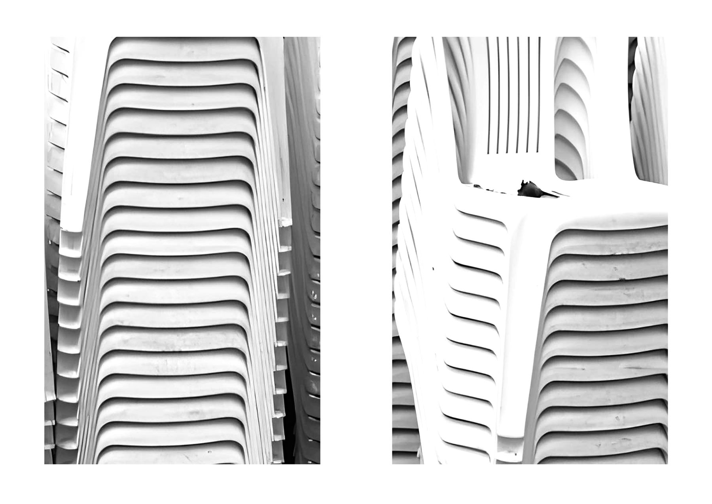
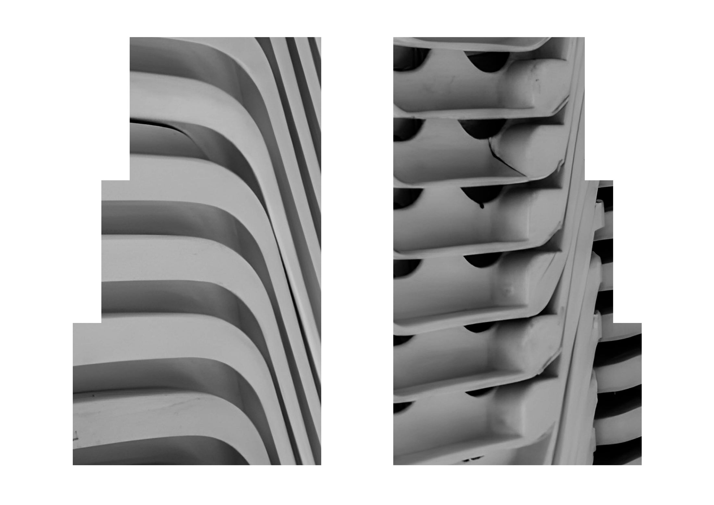
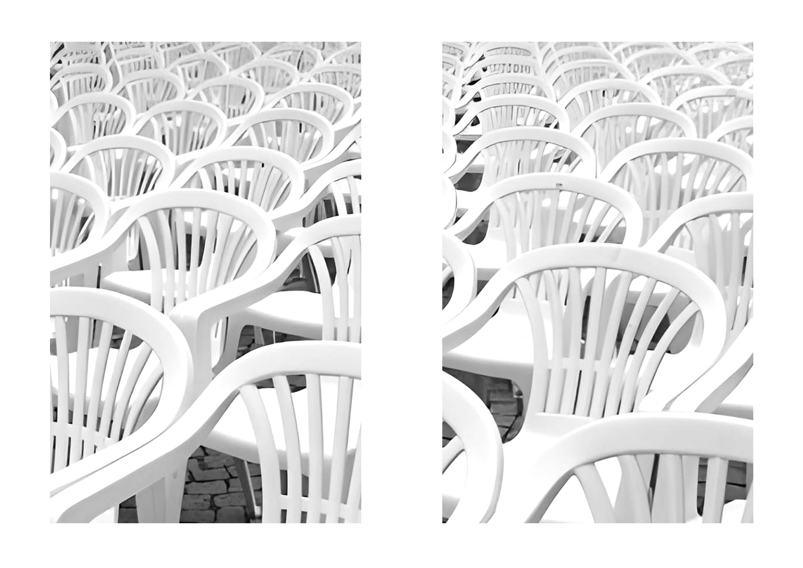
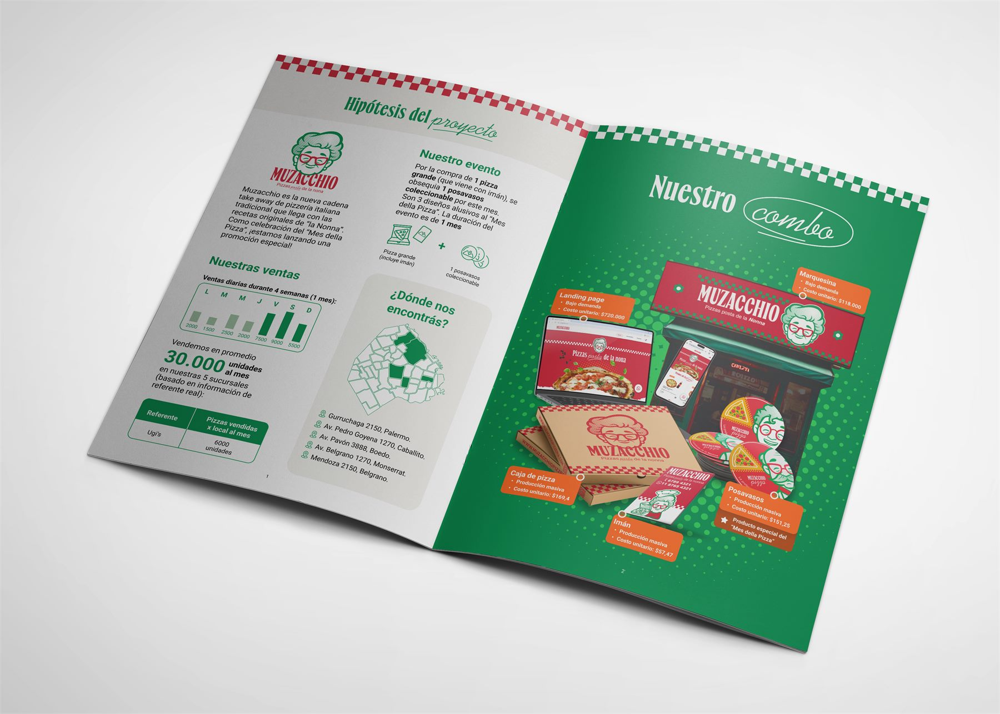
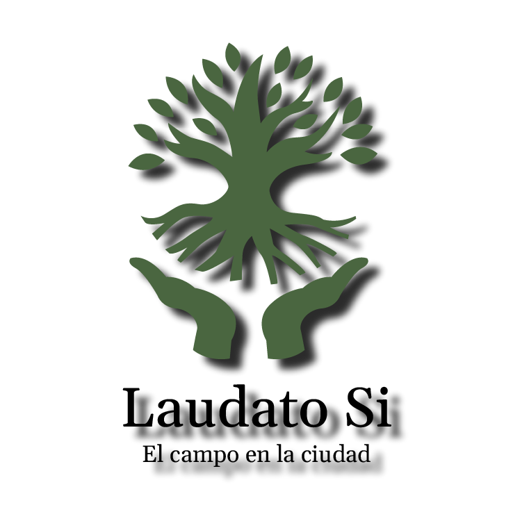
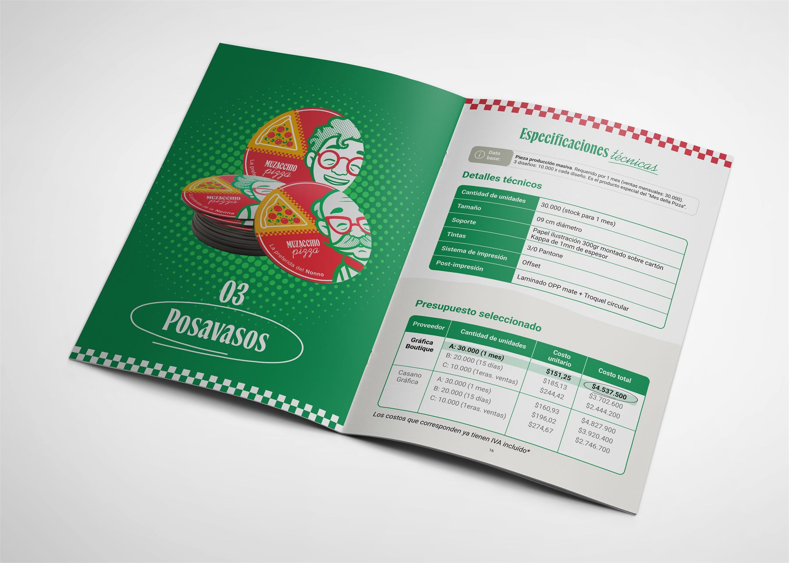
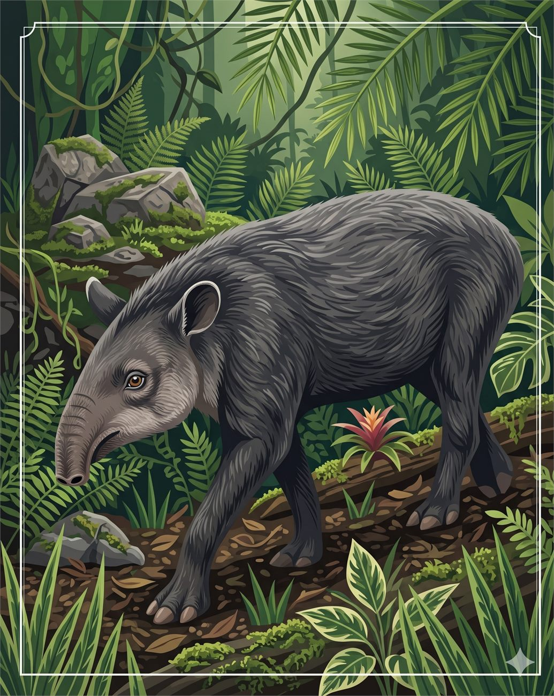
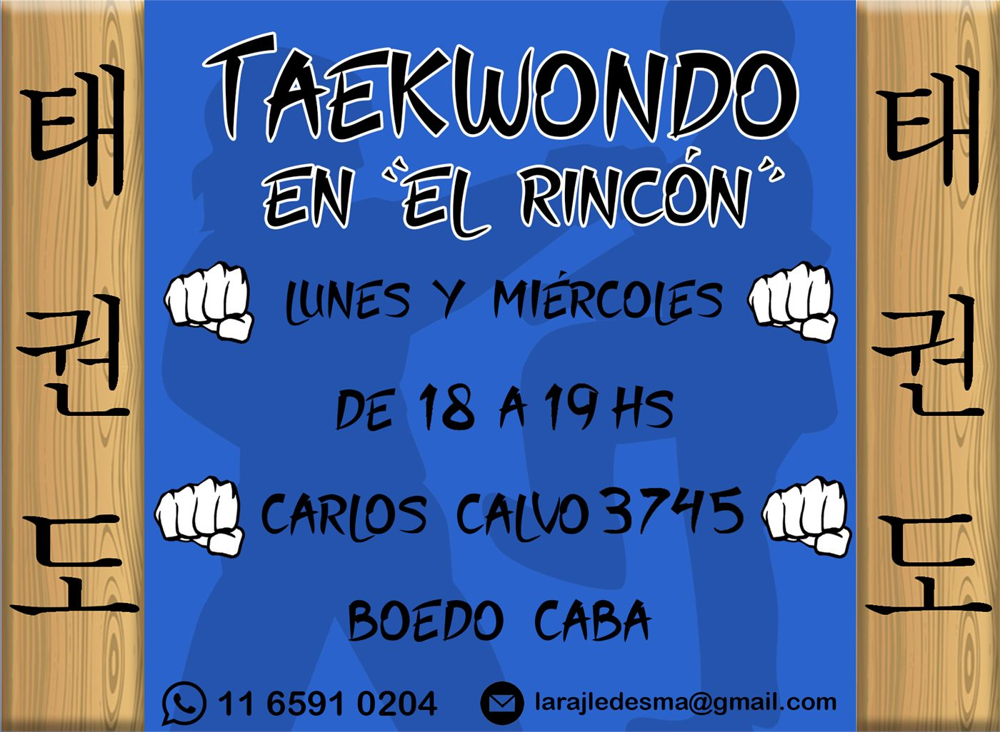
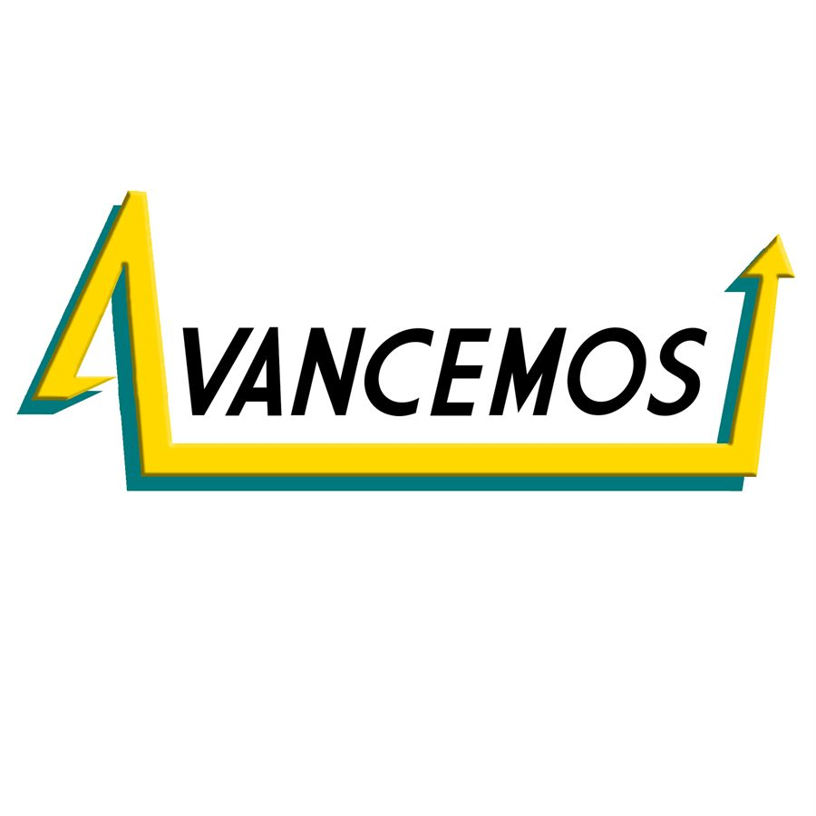

Portfolio 2021 — 2026
Martin Orsini
Diseñador gráfico. Trabajo en identidad visual, editorial y sistemas de marca: proyectos donde la forma tiene que explicar algo, no solo decorarlo.
01 Sobre mí
Diseño sistemas,
no piezas sueltas.

Me llamo Nombre Apellido y hace seis años que construyo identidades para marcas que necesitan sonar distinto sin gritar. Me interesa el punto donde la tipografía, el sistema y la impresión se cruzan.
Trabajo con clubes, editoriales, cervecerías y equipos de producto. Suelo entrar temprano en el proceso: antes del logotipo hay una conversación sobre qué tiene que resistir esa marca durante los próximos diez años. Después vienen las formas.
Formación
- Diseño Gráfico — UBA FADU · 2016–2021
- Posgrado en Tipografía — UBA · 2022
- Diseño Editorial Contemporáneo — Domestika · 2023
Experiencia
- Freelance / Estudio propio · 2022 — hoy
- Diseñador senior — Estudio Ánima · 2020–2022
- Diseñador junior — Taller Norte · 2018–2020
Áreas de interés
02 Índice de proyectos
Trabajo
seleccionado.
Cuatro proyectos desarrollados en profundidad. Tocá cualquiera para ir directo al caso.

01
Estrella de Maldonado
Indumentaria y anuario para un club de barrio: una misma grilla sostiene la camiseta y la doble página.

02
Sillas
Libro de autor sobre el objeto más repetido del país: la silla de plástico blanca.

03
Cerveceros del Sur
Identidad, packaging y campaña para una cervecería artesanal con local en La Boca.

04
Mush type
Una fuente display blanda y una pieza animada donde las letras se deforman en vez de entrar y salir.
03 Proyecto 01 — Identidad visual
Estrella de
Maldonado

Estrella de Maldonado es un club de barrio con equipos de futsal y vóley en todas las categorías. El encargo fue la identidad de una temporada completa: tres camisetas, el anuario del club y las piezas que las presentan.
El desafío
El escudo ya existía y no estaba en discusión: una estrella blanca sobre franja celeste, sencilla y muy querida. Lo que faltaba era todo lo que va alrededor, y que cambiaba de año en año según quién lo hiciera.
Había que darle al club un sistema propio que aguantara tanto una camiseta como una doble página de anuario.
El sistema
Una grilla que se ve. Las tres camisetas comparten una retícula de líneas finas y marcas rojas que aparece impresa sobre la tela: en la titular sobre blanco gastado, en la suplente sobre un azul saturado, y de nuevo en la auxiliar.
Esa misma grilla ordena el anuario, donde funciona como hoja cuadriculada sobre la que se pegan fotos, recortes y firmas.
Indumentaria 2025


Anuario del club
Un anuario que cuenta la historia del club a través de sus jugadores. Cada perfil se arma como una hoja de carpeta: fotos pegadas, títulos en azul, anotaciones a mano.


04 Proyecto 02 — Editorial
Sillas
Un libro de fotografía sobre un solo objeto: la silla de plástico blanca, apilada, repetida, en todos lados. Blanco y negro, alto contraste, y una maqueta que deja que la imagen decida cuánto espacio ocupa.

El punto de partida
La silla monobloc es probablemente el objeto más repetido del país. Está en el patio, en el club, en la vereda, en el velorio. Nadie la mira.
La maqueta
Aire alrededor. Ninguna imagen se pega al borde por obligación: cada una elige su escala y su posición dentro de la caja. El blanco de la página funciona como silencio entre foto y foto.
Páginas


Dobles páginas




Cierre



05 Proyecto 03 — Branding / Campaña
Cerveceros
del Sur
Una cervecería artesanal con local en La Boca que necesitaba una marca capaz de sostener dos cosas a la vez: la lata en la góndola y la pared del salón. La identidad se construyó desde una ilustración —un pingüino con una jarra— y una tipografía de cartel antiguo.

El sistema
El isologotipo funciona como escudo completo en las piezas grandes y se reduce a la tipografía sola cuando el espacio no alcanza. Detrás de todo hay un mismo grabado de montaña y bosque que aparece como trama, como fondo o como textura de lata según la pieza.
Tres variedades —Stout, IPA y Honey— comparten estructura de etiqueta y se diferencian solo por el valor del fondo: negro, verde agua y blanco.
La campaña
«La mejor, es del Sur». La gráfica usa polaroids apiladas sobre el grabado: fotos de gente en el local, pegadas con cinta, con la bajada manuscrita «Volver a disfrutar».
El mismo recurso baja a Instagram, a la vía pública y a los table tents de las mesas sin necesidad de rediseñar nada.
Marca y packaging


Campaña y aplicaciones


06 Proyecto 04 — Tipografía en movimiento
Mush type
Una tipografía display blanda, hecha de bultos que se tocan, y una pieza en movimiento que la explica sin explicarla: las letras se inflan, se derriten y se vuelven a acomodar.

La letra
Sin astas rectas y sin ángulos: cada signo se resuelve con curvas que se ensanchan y se estrangulan. Los contornos internos casi se cierran, y eso es lo que le da el aire de masa cruda que buscábamos.
El movimiento
La tipografía como materia. En la animación las letras no entran ni salen: se deforman. El par amarillo y rojo se invierte según la escena y aguanta el contraste incluso cuando la forma se vuelve casi ilegible.
La pieza


Universo gráfico


07 Otros trabajos
Playground.
Encargos chicos, experimentos tipográficos y cosas que hice porque sí. Sin caso de estudio.









08 Contacto